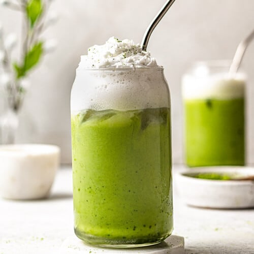
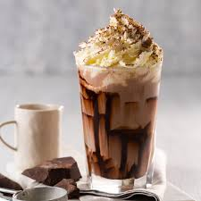

Mocktails
Pina Colada

olive oil, onion, chopped, garlic cloves, minced, tomato paste, dried basil or oregano, cup cream or milk
Mojito
olive oil, onion, chopped, garlic cloves, minced, tomato paste, dried basil or oregano, cup cream or milk
Jamaica
olive oil, onion, chopped, garlic cloves, minced, tomato paste, dried basil or oregano, cup cream or milk
Hot Drinks
esspresso

olive oil, onion, chopped, garlic cloves, minced, tomato paste, dried basil or oregano, cup cream or milk
Capuccino

olive oil, onion, chopped, garlic cloves, minced, tomato paste, dried basil or oregano, cup cream or milk
latte

olive oil, onion, chopped, garlic cloves, minced, tomato paste, dried basil or oregano, cup cream or milk
Cold Beverages
Iced Latte
olive oil, onion, chopped, garlic cloves, minced, tomato paste, dried basil or oregano, cup cream or milk
Iced Mattcha

olive oil, onion, chopped, garlic cloves, minced, tomato paste, dried basil or oregano, cup cream or milk
Iced Chocolatte

olive oil, onion, chopped, garlic cloves, minced, tomato paste, dried basil or oregano, cup cream or milk